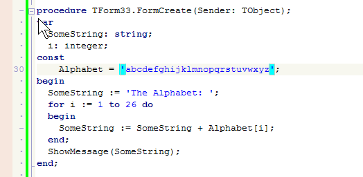

Синхронные правки (SyncEditing)
Это режим, позволяющий выполнять одновременное
переименование нескольких идентификаторов (любых одинаковых слов или
чисел). Действует он так:
- Выделите часть текста, в пределах которой есть несколько одинаковых слов;
- Появится зеленоватая иконка на вертикальной полосе слева от текста
у нижнего края выделения - кликните ее;
- Включиться режим "Синхронные правки". При попадании каретки в слово,
которое несколько раз встречается в выделении, это слово и все его
копии (внутри выделения) получат специальную подсветку. Редактирование одного слова
вызовет одновременное изменение остальных.
Следующее видео демонстрирует, как это происходит:

Можно включать/выключать режим "Синхронные правки" по сочетанию клавиш (см.
диалог "Опции -- Клавиши - Перекл. режим синхронного редактирования")
или командой меню "Правка -- Переключить SyncEditing-режим".